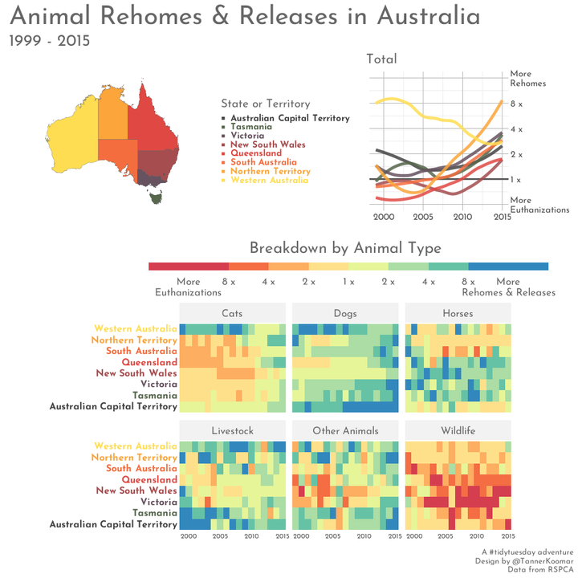
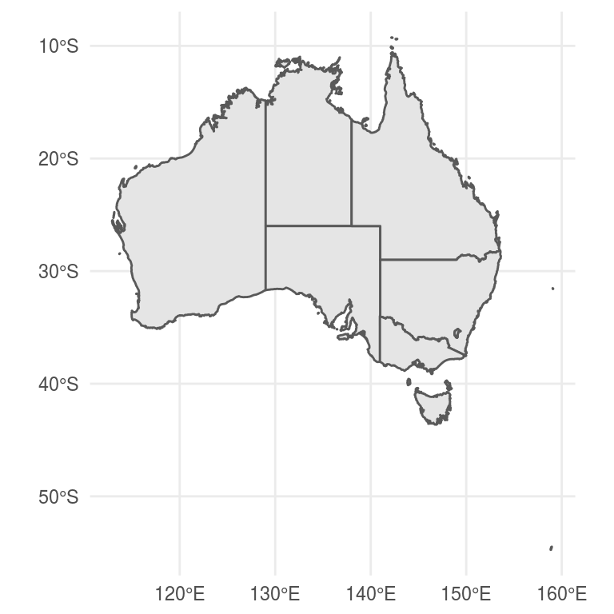
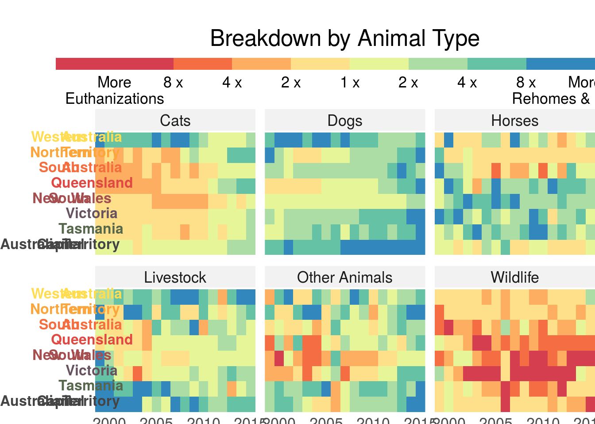
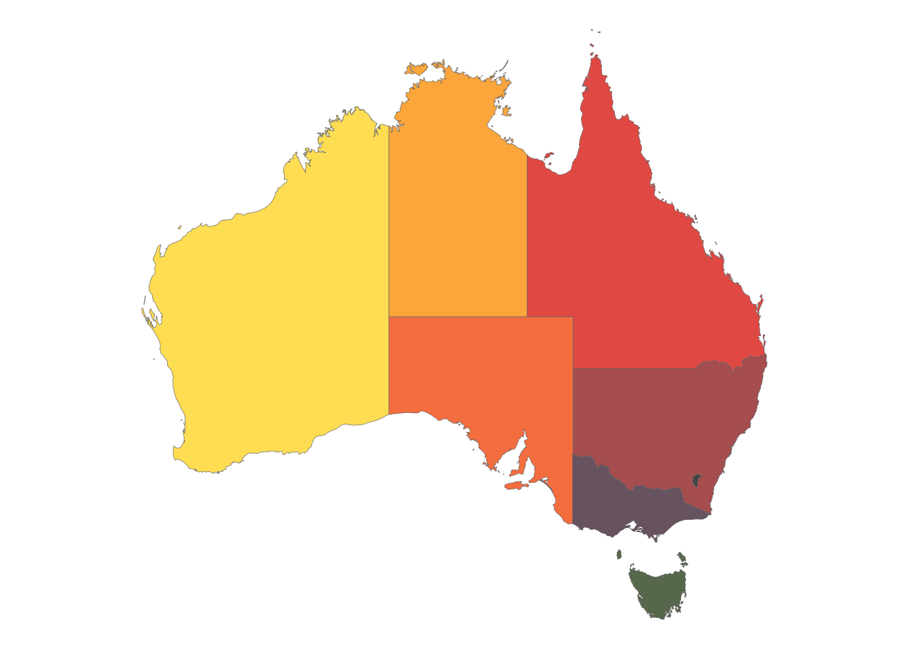
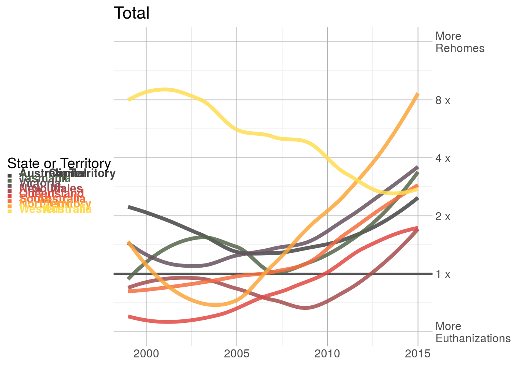
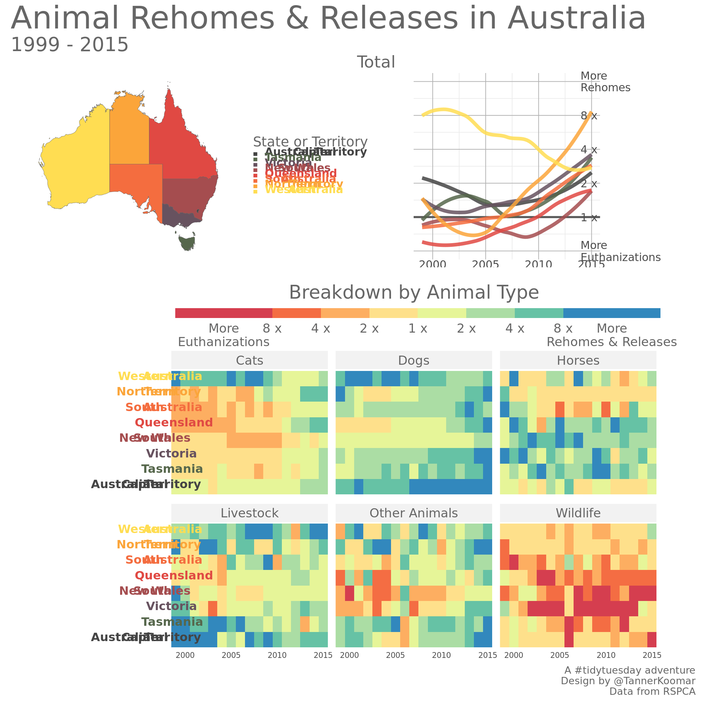

Australian Pets

Setup
library(tidyverse)
library(sf)
library(ggtext)
library(patchwork)
library(showtext)
font_add_google("Josefin Sans", "Josefin Sans")
showtext_auto()
animal_outcomes <- readr::read_csv('https://raw.githubusercontent.com/rfordatascience/tidytuesday/master/data/2020/2020-07-21/animal_outcomes.csv') %>%
filter(year <= 2015)Peek at the data
head(animal_outcomes)## # A tibble: 6 x 12
## year animal_type outcome ACT NSW NT QLD SA TAS VIC WA
## <dbl> <chr> <chr> <dbl> <dbl> <dbl> <dbl> <dbl> <dbl> <dbl> <dbl>
## 1 1999 Dogs Reclai… 610 3140 205 1392 2329 516 7130 1
## 2 1999 Dogs Rehomed 1245 7525 526 5489 1105 480 4908 137
## 3 1999 Dogs Other 12 745 955 860 380 168 1001 6
## 4 1999 Dogs Euthan… 360 9221 9 9214 1701 599 5217 18
## 5 1999 Cats Reclai… 111 201 22 206 157 31 884 0
## 6 1999 Cats Rehomed 1442 3913 269 3901 1055 752 3768 62
## # … with 1 more variable: Total <dbl>Get a Map
au_sf <- rnaturalearth::ne_states(country = 'Australia', returnclass = 'sf') %>%
mutate(state = str_remove(iso_3166_2, "AU-"))
ggplot(au_sf) +
geom_sf() +
theme_minimal() 
Get colors
Make a vector of colors for each state/territory.
state_colors <- au_sf %>%
filter(state %in% colnames(animal_outcomes) &
!is.na(abbrev)) %>%
as.data.frame() %>%
transmute(name = name,
state = state,
color = wesanderson::wes_palette("BottleRocket2",
n = 12, type = 'c')[c(1:6,9,12)] %>%
colorspace::lighten(amount = .2),
name_md = glue::glue("<b style='color:{color}'>{name}</b>")
) Combine Map and Data
Because the states / territories need to go into the rows (sf has 1 row per geometry), we will be pivoting the data longer before we join.
animal_outcomes_long <- animal_outcomes %>%
select(-Total) %>%
pivot_longer(cols = 4:11,
names_to = 'state',
values_to = 'count') %>%
pivot_wider(names_from = outcome,
values_from = count) %>%
mutate_all(replace_na, 0) %>%
inner_join(state_colors, by = 'state')Combine Rehomed and Released
Wild animals are obviously released — rather than rehomed — but both can be viewed as the alternative to being euthanized, so we will combine them. Really not sure what “Other” would mean, so let’s just exclude it.
animal_outcomes_long <- animal_outcomes_long %>%
mutate(`Not Euthanized` = (Reclaimed + Rehomed + Released),
ratio = (`Not Euthanized` + 1) / (Euthanized + 1)
)
animal_outcomes_long[1:5,1:8]## # A tibble: 5 x 8
## year animal_type state Reclaimed Rehomed Other Euthanized Released
## <dbl> <chr> <chr> <dbl> <dbl> <dbl> <dbl> <dbl>
## 1 1999 Dogs ACT 610 1245 12 360 0
## 2 1999 Dogs NSW 3140 7525 745 9221 0
## 3 1999 Dogs NT 205 526 955 9 0
## 4 1999 Dogs QLD 1392 5489 860 9214 0
## 5 1999 Dogs SA 2329 1105 380 1701 0heatmap_plot <- animal_outcomes_long %>%
ggplot(aes(x = year, y = name_md, fill = ratio)) +
geom_tile() +
scale_fill_fermenter(palette = 'Spectral',
limits = c(1/16, 16),
breaks = c(1/16, 1/8, 1/4, 1/2, 1, 2, 4, 8, 16),
trans = 'log2',
direction = 8,
show.limits = F,
labels = c('More\nEuthanizations',
'8 x', '4 x', '2 x', '1 x', '2 x', '4 x', '8 x',
'More\nRehomes & Releases'),
guide = guide_colorsteps(title = NULL)
) +
scale_x_continuous(expand = c(0,0)) +
facet_wrap(~animal_type, ncol = 3) +
labs(title = "Breakdown by Animal Type") +
theme_bw(base_size = 16) +
theme(
plot.title = element_text(hjust = 0.5),
plot.margin = margin(t = 25, b = 0),
legend.box.margin = margin(),
legend.margin = margin(b = -10),
legend.position = 'top',
axis.text.y.left = element_markdown(size = 12),
panel.border = element_blank(),
line = element_blank(),
axis.title = element_blank(),
axis.ticks.length = unit(0, 'pt'),
legend.key.width = unit(100, 'pt'),
legend.key.height = unit(10, 'pt'),
strip.background = element_rect(color = NA,
fill = 'grey95')
)
heatmap_plot
au_map <- au_sf %>%
filter(state %in% colnames(animal_outcomes) &
!is.na(abbrev)) %>%
ggplot(aes(fill = name)) +
geom_sf(color= 'grey40', size =1/8) +
scale_fill_manual(values = state_colors %>% select(name, color) %>% deframe(),
guide = guide_none()) +
theme_void() +
theme(legend.position = 'none',
legend.key = element_blank(),
plot.margin = margin()
)
au_map
line_plot <- animal_outcomes_long %>%
group_by(name, year, name_md) %>%
summarize('Not Euthanized' = sum(`Not Euthanized`),
Euthanized = sum(Euthanized),
ratio = (`Not Euthanized` + 1) / (Euthanized + 1),
.groups = 'keep') %>%
ggplot(aes(x = year, y = ratio, color = name_md)) +
geom_hline(yintercept = 1, color = 'grey35', size = 1) +
geom_smooth(alpha = 0, size = 1.75) +
scale_color_manual(values = state_colors %>% select(name_md, color) %>% deframe() %>%
alpha(0.85),
name = 'State or Territory') +
scale_y_continuous(limits = c(1/2, 16),
breaks = c(1/2, 1, 2, 4, 8, 16),
trans = 'log2',
labels = c('More\nEuthanizations',
'1 x', '2 x', '4 x', '8 x',
'More\nRehomes'), position = 'right') +
labs(title = 'Total') +
theme_bw(base_size = 14) +
theme(
plot.title.position = 'panel',
plot.margin = margin(),
aspect.ratio = 1,
panel.grid.major = element_line(size = 0.35, color = 'grey70'),
panel.border = element_blank(),
legend.text = element_markdown(),
legend.key = element_blank(),
axis.title = element_blank(),
axis.ticks.length = unit(0, 'pt'),
legend.key.width = unit(0, 'pt'),
legend.key.height = unit(0, 'pt'),
legend.position = 'left'
)
line_plot## `geom_smooth()` using method = 'loess' and formula 'y ~ x'## Warning: Removed 3 rows containing non-finite values (stat_smooth).
showtext_auto()
design <- "
AABBBB
AABBBB
CDDDDD
CDDDDD
CDDDDD
"
final_plot <- au_map + line_plot + plot_spacer() + heatmap_plot +
plot_layout(design = design ) +
plot_annotation(title = 'Animal Rehomes & Releases in Australia',
caption = 'A #tidytuesday adventure\nDesign by @TannerKoomar\nData from RSPCA',
subtitle = '1999 - 2015',
theme = theme(title = element_text(size = 27,
color = 'grey40',
family = 'Josefin Sans'),
plot.subtitle = element_text(size = 20),
plot.caption = element_text(size = 10),
text = element_text(size = 10)
)
) +
theme(axis.text= element_text(size = 8)) &
theme(text = element_text(color = 'grey40', family = 'Josefin Sans'),
strip.text = element_text(color = 'grey40', family = 'Josefin Sans'),
legend.title = element_text(color = 'grey40', family = 'Josefin Sans')
)
final_plot## `geom_smooth()` using method = 'loess' and formula 'y ~ x'## Warning: Removed 3 rows containing non-finite values (stat_smooth).